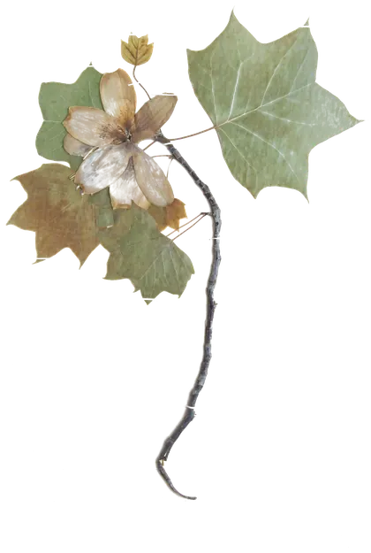

Errore 404
Questo foglio è sparito dall'erbario.
Forse il collegamento è vecchio. I fiori però sono ancora al loro posto.
Torna alla copertina
Errore 404
Forse il collegamento è vecchio. I fiori però sono ancora al loro posto.
Torna alla copertina